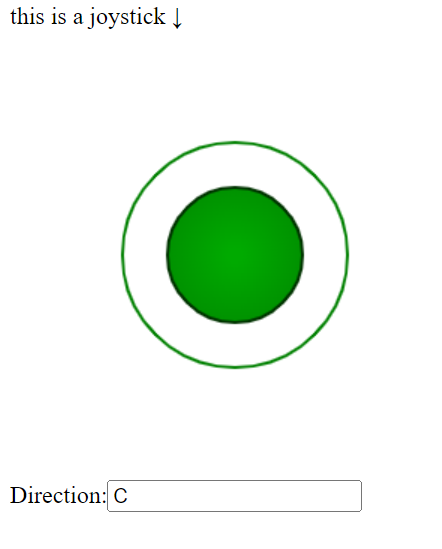
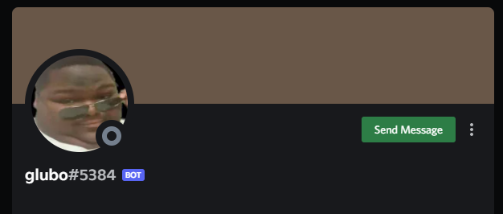

Intro/about me

Hooi mij naam is Lucas van wijk, ik ben een front-end junior/entry developer,
en dit is mijn Portfolio page.
ik ben 21 jaar oud en op het moment studeer ik op het Grafisch lyceum Utrecht, ik heb een focus op skils in html/css/js ook heb ik ervaring in php en OOP php, sql, verder heb ik ook een goed bergrip voor veel bekende dev tools zo als phpmyadmin en GitHub
Work

project interface
dit was een php project waar bij we onze eigen interface moesten maken die op twee verschilende bestanden werkten een controller en een interface, dit heb ik gedaan in php met .txt bestanden om te comuniceren tussen .php pages

discord-bot
dit is een javascript project dat ik met een klas genoot heb gemaakt, voor dit project moesten wij een bot account maken die werkt op de js library van het social media platform discord
Contact